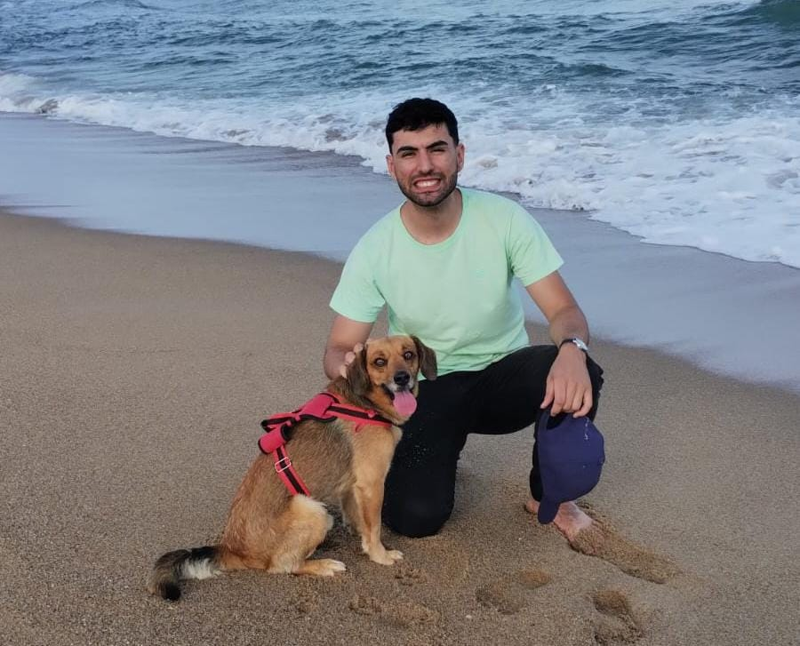
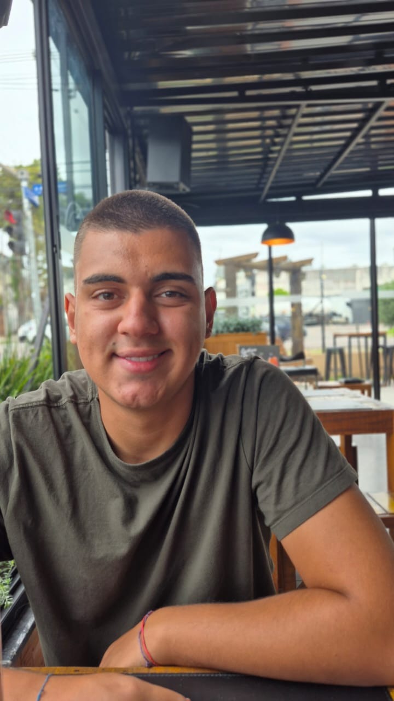
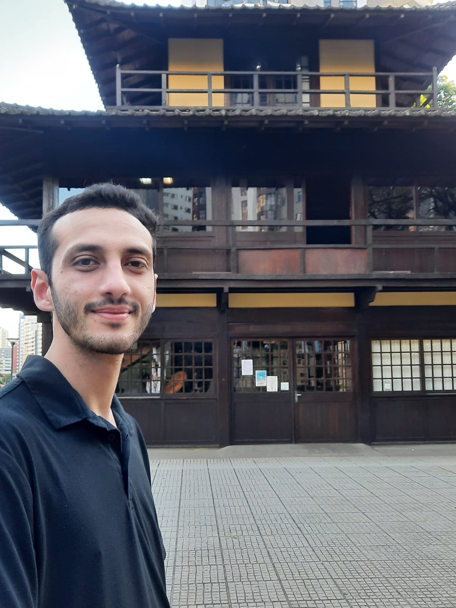

Últimos Episódios
Carregando episódios...
Prefere só o áudio?
Ouça todos os episódios no Spotify, no caminho para a aula ou onde estiver.
Nossa Equipe
Elisangela
Função no Projeto
Maria Eugênia
Função no Projeto

João Vitor
Produção e Edição

José Silva
Função no Projeto

Igor Ayub
Função no Projeto

Nicolas Scholze
Função no Projeto

Maria Paula
Função no Projeto
Angélica
Função no Projeto

Bruno Bonassoli
Função no Projeto

Luiza
Função no Projeto